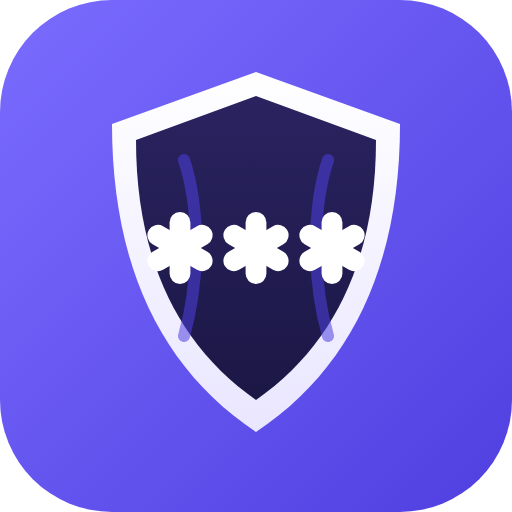

StreamMask Desktop
Hide apps, notifications and private pages while you stream
Go live
Hides the apps below, silences notifications
Apps to hide while live
Each app is hidden, minimized or quit when you go live, and restored after
+ Add app
Guard mode
If a hidden app pops up during the stream, hide it again within seconds
Silence notifications
Turns on macOS Focus (Do Not Disturb) while live, off afterwards
Checking Shortcuts…
Private Browser
A browser window that screen capture cannot see. Open banks, e-mail, DMs here.
⌘⇧P
Open
Extra words to mask inside the private browser (name, street, username). Don't type numbers or cards, they're caught automatically.
Keep StreamMask itself off the stream
This panel is excluded from screen capture too
Activity
Ready.